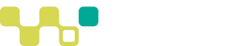
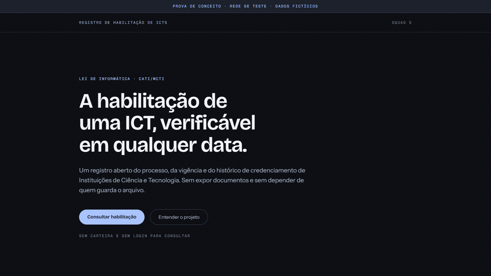

Residência Web 3.0 · TIC 29
Um jeito confiável e transparente de registrar e consultar se uma instituição está credenciada.
ICT = Instituição Científica, Tecnológica e de Inovação
02 / 11
O problema
Responder isso hoje exige conferir registros espalhados, um a um. O credenciamento passa por várias etapas, tem prazo e precisa ser renovado.
03 / 11
A solução
Informações organizadas
Cada etapa importante fica registrada, com data e responsável.
Histórico verificável
Do pedido à renovação, é possível conferir o que aconteceu.
Consulta pública
Qualquer pessoa vê a situação atual, sem cadastro e sem login.
04 / 11
Como funciona
Cadastro da instituição
AprovadoPedido de credenciamento
Em validaçãoAnálise e decisão
Em validaçãoCredenciamento com prazo de validade
Em validaçãoAuditoria e renovação
Em validaçãoConsulta pública da situação
Em validaçãoAprovado: já aceito no projeto. Em validação: desenvolvido, aguardando revisão. As telas de uso ainda serão construídas.
05 / 11
Por que blockchain?
Pedido registrado
Decisão registrada
Prazo definido
Auditoria registrada
Pelo desenho do projeto, documentos completos e dados pessoais ficam fora do registro público. Etapa atual: prova de conceito, com dados de teste.
06 / 11
Como estamos construindo
Planejamos o funcionamento
Definimos como proteger as informações
Desenvolvemos as funcionalidades
Testamos e validamos cada entrega
Evoluímos o sistema por etapas
07 / 11
Quem está construindo
Lukas
Regras, riscos e etapas centrais do credenciamento
Gabriel
Entrada da instituição e início do credenciamento
Alison
Permissões e usuários
Kaique
Experiência web, pública e interna
Heitor
Mentoria
Clique em um card para ver as contribuições.
08 / 11
O que já construímos e onde estamos
Já temos
Estamos validando
Vem a seguir
Estamos saindo da construção das peças para começar a conectá-las.
Projeto em fase de prova de conceito, ainda sem uso real.
09 / 11
O sistema na prática
Uma visão da interface desenvolvida para o sistema de credenciamento.

10 / 11
Próximos passos
Resultado esperado